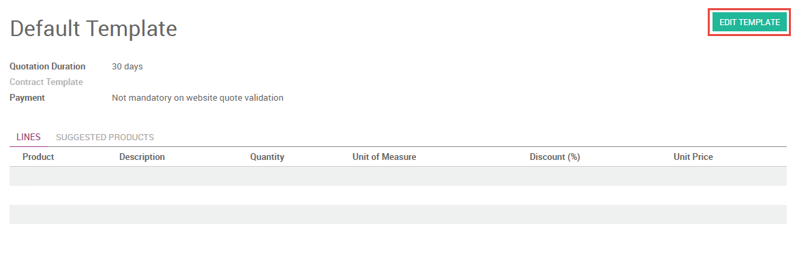

Configuration
Enable Online Quotations
To send online quotations, you must first enable online quotations in the Sales app from . Doing so will prompt you to install the Website app if you haven't already.
You can view the online version of each quotation you create after enabling this setting by selecting Preview from the top of the quotation.
Edit Your Online Quotations
The online quotation page can be edited for each quotation template in the Sales app via . From within any quotation template, select Edit Template to be taken to the corresponding page of your website.
You can add text, images, and structural elements to the quotation page by dragging and dropping blocks from the pallet on the left sidebar menu. A table of contents will be automatically generated based on the content you add.
Advanced descriptions for each product on a quotation are displayed on the online quotation page. These descriptions are inherited from the product page in your eCommerce Shop, and can be edited directly on the page through the inline text editor.
You can choose to allow payment immediately after the customer validates the quote by selecting a payment option on the quotation template.
You can edit the webpage of an individual quotation as you would for any web page by clicking the Edit button. Changes made in this way will only affect the individual quotation.
Using Online Quotations
To share an online quotation with your customer, copy the URL of the online quotation, then share it with customer.
Alternatively, your customer can access their online quotations by logging into your website through the customer portal. Your customer can accept or reject the quotation, print it, or negotiate the terms in the chat box. You will also receive a notification in the chatter within Odoo whenever the customer views the quotation.